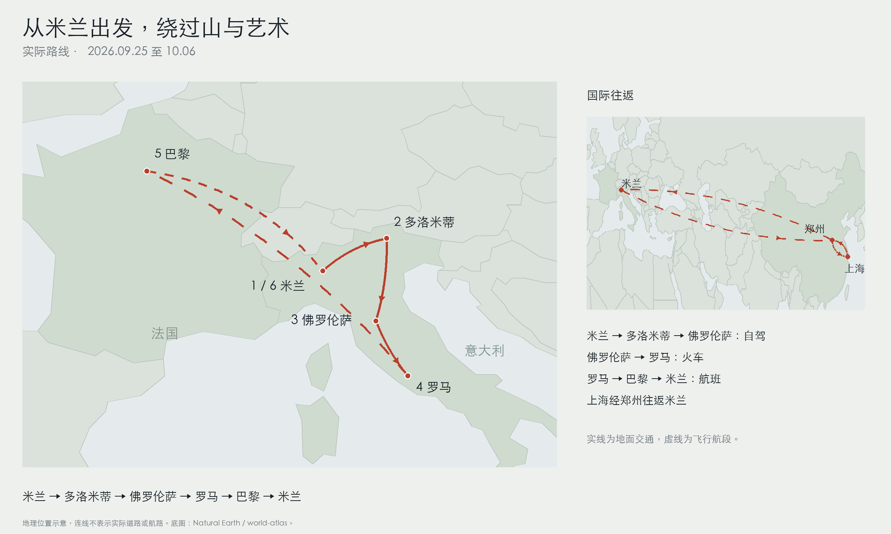

山谷里的教堂、刀锋一样的山脊、文艺复兴的穹顶，以及终于亲眼见到的卢浮宫名作。这一圈很好看，也真的很赶。回来之后，我想把美景留下，更想把取车、赶路、吃饭和走错路的细节一起写清楚，让准备出发的你有一份能拿来参考的攻略。
这是一份亲身经历整理成的旅行攻略。照片就在相应地点下面；想快速做计划，可以先看路线和出发准备，想跟着我们重走一遍，就从多洛米蒂读起。
我们的实际路线是米兰进、米兰出：上海经郑州飞米兰，自驾去多洛米蒂和佛罗伦萨，火车到罗马，再飞巴黎，最后飞回米兰返程。地图上的线很清楚，真正走起来才知道，每次换城都会吃掉一大块时间。

实际旅行路线示意，用于理解目的地与换乘关系，不作导航。点击地图可在新窗口查看完整大图。
- 上海 → 郑州 → 米兰早上出发，当地时间 20:15 抵达米兰；第一晚先休息。
- 多洛米蒂机场取车后进山，富内斯、刀锋山与休斯高原，再逛 O 镇。
- 佛罗伦萨自驾抵达市区并还车，围绕大教堂和艺术展馆步行游览。
- 罗马乘高铁抵达，古罗马、梵蒂冈与艺术藏品，最后转往机场。
- 巴黎从罗马飞来，卢浮宫、铁塔和餐厅，最后一晚住奥利机场附近。
- 米兰 → 郑州 → 上海早班机回米兰，白天逛大教堂，晚上 22 点起飞回国。 经郑州转机，10.06 抵达上海。
航班怎么选：先想清楚从哪里进、从哪里出
我们搭乘的是吉祥航空的上海至米兰往返航班。去程为上海至郑州 HO2071、郑州至米兰 HO1667；返程为米兰至郑州 HO1668、郑州至上海 HO2072。当时选航班，优先考虑中转次数尽量少、中转地点与衔接让人安心，以及抵达后能不能顺利休息。综合比较后，我们选择了经郑州往返米兰。
当地时间晚上到，第一天就能先安顿下来。长途飞行以后，我还是建议不要急着往行程里塞一个景点：入境、拿行李和去住处都需要时间，吃点东西、睡好一觉、倒一倒时差，第二天再开始，会舒服不少。回国到达时间也值得一起看，不只是去程好不好衔接。
走完之后，我更推荐少走回头路
这次路线绕了一个圈，尤其最后还要从巴黎飞回米兰，再赶回国航班。景色确实都看到了，但赶车、搬箱子、换酒店的次数也多了。日历上一个地方写了三天，扣掉进城和离开的两头，能完整用来玩的时间往往只有一天。
如果再做同一条线路，我会先比较“巴黎入境 → 米兰 → 多洛米蒂 → 佛罗伦萨 → 罗马离境”的开口航线：先玩巴黎，再一路往意大利南部走，减少折返。这只是下一次的安排思路，我们这次并没有这样走；还要结合实际航班、交通、租车的取还点和假期长度判断。
做计划时，不妨把每次换城单独划成半天或一天：从酒店到车站、办理还车、候机、进城，这些都算旅程的一部分。先留出能稳稳衔接的时间，再决定那天还适不适合加一个景点。
签证：真实的预订，比一份漂亮的行程单重要
申根签证的材料和办理流程，可以按受理机构当时公布的要求逐项准备。我最想提醒的是，行程一定要合理，住宿要有真实、正常的预订单，别拿虚假的订单去申请。哪天住哪里、城市之间怎么移动，应当能彼此对应，自己也讲得清楚。
可以先确认主要城市和交通衔接，再安排住宿。即使选了可以调整的预订，也要保证预订真实有效；行程发生变化后，再同步核对相关材料。把护照、签证和预订信息留一份离线备份，取车、入住或者手机网络不稳定的时候，会少一点手忙脚乱。
自驾证件：我们办了使馆认证的意大利文翻译
这次去意大利自驾，我们准备了驾照的意大利文翻译，并办理了使馆认证。办理过程里遇到的要求是先完成签证，再办这份认证，所以想自驾的朋友最好早点向办理方确认时间，给文件寄送和取车留出余地。这里说的是我们的办理经历，具体手续请按官方要求核实。
至于网上常见的“小白本”，不要仅凭商品名称就当作有效的国际驾驶许可。意大利对欧盟及欧洲经济区以外驾照的使用有明确要求：有效驾照原件需配合有效国际驾驶许可，或符合规定的意大利文正式译本。文件是否符合当地法规，与租车公司是否愿意交车，也都要分别确认。
如果考虑其他翻译或认证路径，请核实是否适用于自己持有的驾照、实际目的地和驾驶期间。不要把“办过一次”理解成到任何国家都能直接用；出发前给租车公司写清楚主驾驶身份、驾照签发地和准备携带的文件，确认取车条件。
长途飞行：座位、腰背和充电，提前想好
长途坐十多个小时，座位空间的差别会影响休息。我的身高是 1.78 米，这次感受是前方空间更宽的位置能让腿伸展开一些。选座时，可以先看实际机型的座位图，再确认前排是否有固定扶手、婴儿摇篮或其他限制，别只看“第一排”这个名字。
腰部不舒服的话，轻便腰靠值得考虑。充气脚垫也是一个备选，但需要事先确认航司规定并获得机组允许，不能妨碍通道、前排乘客或紧急撤离，紧急出口座位不使用。飞行中能做什么，以机组的安全要求为准，别为了舒服把自己或别人堵住。
充电接口也值得提前确认：如果机上只有 USB-A，而你平时用的是 USB-C 线，就要备好合适的线或转换头。也不要把充电宝当作机上一定能用的方案：随身携带、存放和使用的要求要提前看清，登机后听从航司与机组规定，电子设备出发前先充好电。
去程如果能选靠前一些的位置，下机可能更早一点，但入境到底排多久，还取决于当天抵达的航班、人流和开放窗口，不能保证靠前就一定省掉很久。我的经验是把入境排队算进抵达日，别在落地后紧接着安排一个必须准时到场的项目。
取车：Sicily by Car 给这趟旅行开了个好头
这次只体验了 Sicily by Car，不能替所有租车公司下结论，但我们在马尔彭萨机场 T2 取车的感受确实不错。接待我们的是一位意大利女士，英语沟通很顺畅，我问的很多问题，她都耐心解释了。第一次在欧洲租车，这种有人愿意把事情讲明白的感觉，挺让人安心。
原先订的是 MG3，到现场给我们换成了同级别的 Jeep，车稍微大一点，颜色也合眼缘。山区和乡间有些路窄、弯也急，所以我还是更偏向选择够放行李的小车，别只想着车型越大越好。确认车型时，行李空间和自己对急弯、会车的熟悉程度都要考虑。
加油和高速的操作，建议在出发前就弄清楚。我们遇到不少需要自助操作的环节，到跟前才开始查怎么加油、怎么付款，会很被动。可以提前把常用步骤和词汇存在手机里，再问清租车公司车辆燃料类型、还车要求、还车点入口；进城市时，也要留意限行与停车标识。
换城那天：行李和时间，都需要一个位置
这趟最明显的体会是，交通衔接不能只看车票上的出发和到达时刻。退房后箱子放哪，车站从哪个入口进去，到了下一站怎么去酒店，都值得先看一眼。留着行李走一段路，和轻装去散步，是完全不同的体力消耗。
到站、还车或飞行那天，建议挑能随时收尾的安排。先固定必须出发的时间，再留一段缓冲；想逛的地方很多，但把重要的那一两件事做好，比一天跑完一长串名字更让人舒服。
我们会把 Booking、携程和去哪儿放在一起比价，再决定从哪里订。比较时把入住日期、人数和房型对齐，也看看是否含早餐、取消条件有没有差别。看起来是同一家酒店，也不一定是同一份预订条件，先把这些核对清楚，再挑适合自己的。
多洛米蒂有些民宿和酒店并没有在 Booking 上展示，所以只在平台里找，选择可能不够全。我们会再去看住处的官网，找到联系方式后发邮件，问想住的日期有没有房、有哪些房型。平台没搜到，不妨再看看官网。这个方法确实有点原始，但也多了一条找住处的路。
- 🔎查官网问日期与房型
- ✉️收 offer比较几份回复
- 📝确认条款再邮件确认与付款
对方回复 offer，也就是住宿报价与条件后，我们会把几份回复放在一起看，选出自己满意的，再通过邮件确认。这个过程不像平台上点几下就结束，要来回沟通，但日期、房型和预订条件都写在邮件里，确认时也有东西可以对照。
邮件确认后，还会有预付定金这一步，具体支付安排按对方的 offer 来。这里想认真提醒一句：定金可能不可退，支付前核对 offer 中的取消退款条款。别只看房间合不合心意，也把行程变化时能不能取消、怎样处理看明白，再决定是否付款。
为什么我们选自驾
山区景点之间有公交，不过会绕路，也需要配合班次。我们自由行的时间有限，自驾更能按自己的节奏去山谷和缆车站；如果不想开车，也可以使用公共交通，但要把站点、换乘和回程时刻一起查清，尤其是看日落那天。
有些当地住宿会提供交通卡，适用区域和使用时间需要向住宿方确认，不能默认每一家都包含。山区夜间临时叫车不一定方便，公交末班车错过之后，选择会少很多。出门前就把回住处的方法想好，实在需要帮助，早点联系住宿方。
第一天下午：先被一顿午饭劝退了
我们 9 月 26 日早上在米兰取车，开到多洛米蒂时已经下午 3 点多。办理入住后，在酒店附近吃了第一顿饭：披萨有些烤焦，肉的味道我不太能接受，意面也比习惯的硬。那一餐是真的吃得艰难，本来对后面几天的饮食还有期待，吃完立刻开始担心了。
于是我们导航去找最近的华人超市，结果“最近”也要走三十多公里，还得回头。来时觉得自己应该适应得了，到了现场才被这顿饭打了个措手不及，最后买了泡面和速食回来。对我们的口味来说，那一餐确实很难适应。如果你也担心吃不惯，提前准备一点熟悉的食物，会比临时绕远路踏实。
这次绕路也给后面的安排上了一课：补给最好在进山前想好，不要把买东西看成“顺手几分钟”。在山区，它可能就会改变整个下午的节奏。不过后来超市里的饼干和甜品给了我们惊喜，吃不惯一餐，并不意味着后面没有喜欢的东西。
富内斯山谷：美景到了，停车位没有了
买完速食再去富内斯山谷，已经是傍晚 6 点。原本想好好找一个角度看日落，结果先要面对停车场几乎停满的现实。因为中间插进了超市这一趟，我们能用来停车、步行和拍照的时间都被压缩了，到了地方才开始着急。
富内斯的教堂、草坡和背后那一排群峰，真的很值得来，照片可以替我说明很多。我的建议很简单：想看日落就早点出发，给正规停车和步行留出时间。停车场满了，按当地标识另找允许停车的位置，不要为了抢一眼风景，把车塞到禁止停车的路边或妨碍通行的地方。
刀锋山：九点上缆车，中午才到山顶
第二天一早去了 Seceda，也就是大家常说的刀锋山。这种陡峭山脊的轮廓，确实让人一眼记住。我们在多洛米蒂的日历上写了三天，但前后都被交通吃掉了一部分，真正完整的一天要安排刀锋山和休斯高原，所以当时选择了适合当天安排的一日票。
这里最容易忽略的是票覆盖哪些缆车和路段。我们的那张票只包含刀锋山前半段的上下缆车，后半段得自己爬。早上 9 点到缆车站，买票、上山、徒步，到山顶已经中午 12 点。坡比想象中陡，如果体力有限，又想下午继续去别处，建议先核实全程缆车方案，别到了山上才发现还有一段需要爬。
冲锋衣、合适的鞋、水和墨镜都值得准备，防晒更要认真。我当时脸上涂了，偏偏漏掉鼻子，结果晒红、脱皮，旅行后半段都在提醒我这件事。山风凉不代表晒不到，鼻子、耳朵这些容易遗漏的位置，也要照顾到。
我们逛完准备下山，回到山下已经下午 3 点。中间还有一段自己给自己加的戏：我觉得某条路看上去能快点下去，结果错过缆车点位，只能返回去找，又多走了半个多小时。后来再看指示牌就老实了，山里不要凭方向感猜捷径，先确认路线和缆车站，再迈步。
休斯高原：把末班缆车记在心里
下午 3 点回到山下后，我们开车去休斯高原的缆车站。直接导航到缆车站，旁边就是停车场，这一段停车和上缆车都比较顺利。我们当天持有的票覆盖了这段缆车，所以直接按规定刷票上去，接下来就是看草坡和远处山峰的时间了。
和刀锋山相比，休斯高原给我的感觉更舒展一些。一天里连续看到这两种风景，很满足，但也确实要盯着时间。我们那天需要注意的末班缆车是 17:30，这只是当日的运营情况；出发日期、季节和线路一变，时刻就可能不同，要查自己当天的往返班次。
如果第一站上山、拍照或下山拖长了，不妨减少后面的安排。不要等快到收班才发现回程还没想好，尤其选择公交进山时，缆车下来之后还要接上回住宿的交通。
离开山区：O 镇逛一逛，再去佛罗伦萨
9 月 28 日早起退房后，我们先开车去 O 镇，也就是 Ortisei，逛手工艺术品和纪念品。这个早上适合自由一点，看到喜欢的就停一下，不必继续往远处跑。中午吃完饭，才正式启程去佛罗伦萨。
我们把还车点选在佛罗伦萨市区，离住宿大约 1.2 公里，还完车直接走过去。计划上看这一段很近，但拿着行李走，还是得留出时间和体力。订还车点时，把还车手续、从那里到住处的路一起看，地图上的距离只是其中一部分。
住在中心：每天少折返几趟
这次住处靠近主要景点，佛罗伦萨的很多安排都能围着圣母百花大教堂展开，确实少走了不少重复的路。选住宿时，我会把每天真正要去的地方标在地图上，再看步行距离和交通，不只看“市中心”几个字。
大教堂的穹顶和立面，值得从不同距离看一看。围绕已经预约的参观时段安排行程，剩下的时间留给街巷和广场，会比不停跨城折返轻松。我们这站停留也不长，所以更希望每次出门都能顺路做完几件事，再回来休息。
看美术馆之前，先补一点文艺复兴
在欧洲参观美术馆和大教堂，提前了解一点欧洲史、文艺复兴，以及几件重点作品的背景，感受真的会不一样。不是要做考试式的功课，而是知道自己看见的人物、建筑和时代之间，有什么联系。
我也推荐根据参观需要选讲解器或官方语音导览。走马观花看完很多展厅，和认真听懂一件作品，是不同的体验。行程紧的时候，先挑自己最想看的部分，别只顾着把展馆里的名字全部划掉；那些愿意驻足的作品，才更容易留在记忆里。
想念川菜的时候，我们去了巴师傅
这次愿意推荐的一餐是巴师傅川菜。走了一天之后，吃到熟悉的口味会很放松。计划去的话，可以提前打电话问营业和订位，避免到了才发现高峰期要等很久。我们感受到的节奏是，进门、点餐和上菜，都未必像平时熟悉的那样快。
另外也吃过一家北京菜馆，个人不太喜欢，但店名没记住，就不乱猜一家放上来。餐厅评价很看口味，想念什么就认真选那一餐，没必要为了“都尝过”把自己安排得太累。
高铁去罗马：行李能看见，心里更踏实
9 月 30 日下午，我们从佛罗伦萨乘高铁去罗马。这次坐的是 Italo，选到 3 车 1、2 座，前方空间比较开阔，能把行李放在自己看得到的位置。对带着大箱子换城的人来说，这个布局让人踏实不少，但具体座位和车辆配置，还是要以实际订票时的座位图为准。
别因为坐进车厢就完全放松。上下车、停站和刚到站时都容易分心，箱子尽量留在可见范围，证件和手机随身放好。能看见行李是一个便利条件，不能当成绝对不会被偷的保证。
斗兽场：古迹就在城市里
两千年前的罗马斗兽场遗址，让“古罗马”突然从书里变成眼前的建筑。白天的结构和夜间的灯光，各有一种观看方式。它值得专门留时间参观，而不是到了城里只在外面拍完一张，就急着奔向下一站。
热门古迹先核对官方开放和预约要求，尤其当天还有车票或航班时，别把每一段都卡得很紧。近在地图上的几个点，真正逛进去、听完讲解、走出来，也可能把半天填满。
街巷里的喷泉和神殿，也值得驻足
罗马好看的地方，不止在展馆里。照片中的特雷维喷泉、万神殿和街头风景，都可以放进城市步行的节奏里。热门地点人多，拍照时先把包和手机照看好，再找自己喜欢的角度，别让镜头里的美景把身边的动静完全盖住。
我的体会是，罗马值得来、值得走一走，但不是走得越多就看得越好。古迹、展馆和城市散步交替安排，给体力留一点余地，看到喜欢的地方才有心情停下来。
梵蒂冈与博尔盖塞：这部分值得做功课
梵蒂冈的西斯廷小教堂、圣彼得大教堂，以及博尔盖塞美术馆，都是我想到罗马时会立刻想起来的地方。建筑的宏伟和艺术藏品放在一起，那种“亲眼看见了”的感受，很难只靠一两句介绍说清楚。
梵蒂冈地图长廊的金色拱顶，抬头望过去，也很难忘。参观前把预约、入场要求、服装和摄影规则看一遍；该收起相机的时候，就用眼睛看。对美术馆来说，愿意提前了解作品背景、现场再听讲解，会比只认出几个名字更有意思。
被偷的那一下，让我之后警觉了很多
我刚到罗马时，在公交出行中遇到了扒窃，幸好及时发现，最后把东西拿回来了。这不是旅途中一个无关紧要的小插曲，当时的紧张也确实影响了后面的出行。写下来是想提醒大家注意包的位置和拉链，尤其在上下车、拥挤和拿手机查路的时候。
拿回物品是这次的结果，不是建议遇到同样的情况去追赶或对抗。先照顾人身安全、尽快寻求当地警方或工作人员帮助，更重要。回来后回看，安全准备做好，并不妨碍喜欢这座城，反而让人能更安心地欣赏。
去机场：我们换了一种自己更安心的走法
第三天下午要飞巴黎。因为此前在公交上碰到过扒窃，这次我们先打车到火车站，再乘机场列车去罗马机场。对当时的我们来说，选一个自己能从容掌握的路线，比继续带着紧张转来转去更合适。出发前先确认车站、机场和航站楼，再倒推离开住处的时间。
这一段搭乘的是 Transavia。我们在机上拿饮水时才发现，那次航班的这项服务需要另外购买。欧洲境内航段的行李和机上服务要单独看清楚，不能因为前一段长途航班包含了，就默认每一段都一样；饮水也可以提前按机场与航司要求准备好。
住在哪里，要看具体街道和回程路线
巴黎选住宿，我最想提醒的是认真看具体位置。酒店门口是什么样的街道、最近的站怎么走、晚上回来的路是否方便，以及近期住客有没有提到出入的问题，比只凭一个行政区编号下判断更有帮助。
安全不能简单用城区或人口身份来划分。无论住在哪，热门景点、车站和拥挤交通里都要保管好物品；夜里太晚，选择正规、可核验的交通方式直达住处，也是一种让自己轻松的安排。先把到达和夜间回程查好，到了现场会少一些犹豫。
卢浮宫：先看想见的，再给其他作品留一点时间
卢浮宫里的三件熟悉名作，终于在旅程里变成了眼前的相遇：维纳斯、胜利女神、蒙娜丽莎。照片里能认出它们，现场观看又是另一种感受。馆很大，出发前挑好重点，比到了里面完全凭人流走更容易掌握时间。
做攻略可以先标出自己最想看的作品，再结合展馆开放和当天动线安排。卢浮宫官网有参观路线和楼层图，提前下载到手机，到了现场更容易找到方向。不必把所有展厅都走完，看到感兴趣的也可以停下来，给名作之外的相遇一点时间。
铁塔的照片留下来，散步的时间也值得留
巴黎的铁塔很熟悉，来到它面前还是会想拍一张自己的照片。下面留下的是我们这次的画面。做城市行程时，我会建议不要把展馆、餐厅和交通排到毫无间隙，给拍照、坐一会儿和在附近走走留一点空白。
如果再来，我想把这份余地留得更自然：看完一个地方，不必立刻低头去查下一班车。给准备做行程的朋友一个思路：可以按街区组织参观，比如卢浮宫之后接杜乐丽花园与塞纳河边，而不是反复横穿城市。这是可考虑的安排，并非我们这次实际走过的完整线路。
奥利机场附近的最后一晚：买水也成了任务
因为第四天早上要飞米兰，我们第三天晚上直接住到了奥利机场旁边。想法是早上能轻松一点，结果临时买东西却不太方便：我们当时能找到的便利店在机场里面。晚上 10 点多，又走了十多分钟去机场买水，算是这一趟很具体、也很容易避免的小折腾。
所以去机场附近入住之前，先在市区把饮水和必需品准备好，再看住处周围有没有能用得上的商店和餐饮。机场近，不等于买东西和吃饭也近；步行十多分钟，白天轻装走是一回事，夜里累了再走又是另一回事。
La Jacobine：把一餐也当成旅行的一部分
巴黎这次留下好印象的法餐，是 La Jacobine。想安排进去，建议先核对营业和预约情况，再把附近的参观和交通连起来。用餐不是夹在两次赶路之间的一道程序，给喜欢的一餐留出时间，会让这一天更完整。
米兰大教堂：蓝天一衬，像走进画里
当天的天气很好，米兰大教堂真的把我震撼到了。教堂立面和屋顶上的尖塔，在蓝天里拍出来，仿佛带着画里的光。这一站不是随便补上的最后一个打卡点，对我来说，是旅程结束前一个很亮的记忆。
想看广场上的完整立面，也想登屋顶，就先按预约和开放安排好。回国当天尤其要固定返回机场的时间：市区到机场、取行李、值机和安检都算进去，再决定还能逛多久。风景再好，也别把最后的衔接变成冲刺。
最后一天，好好看，也好好收尾
我们最后仍要从米兰经郑州回上海，这也是前面说“少走回头路”的原因。一边看教堂，一边想着晚上还有长途飞行，心里会一直留着一根时间线。下一次选机票，我会把这类衔接和整条路线一起比较，而不只是先锁定一张往返票再努力把所有城市塞进去。
吃饭这件事，我愿意留下这几条
这次想推荐的是佛罗伦萨的巴师傅川菜、罗马梵蒂冈附近的 Alice 披萨、巴黎的 La Jacobine，以及多洛米蒂超市里让我们意外喜欢的饼干和甜品。它们是个人体验，不用变成每个人都必须照着吃的名单；安排在你本来就会去的地方附近，往往更方便。
山区第一顿让我们临时去华人超市补货，佛罗伦萨还有一家没记住名字的北京菜馆不太合口味。这两段经历之后，我更愿意给吃饭留个备选：熟悉的小食、超市补给，以及提前联系好的餐厅。旅行已经很耗体力，胃也值得被照顾好。
巴黎百货商场：逛得开心，也把手续问明白
我们这次主要在巴黎老佛爷和巴黎春天等百货商场逛。商场集中，比较和选择更方便，但是否适合自己，还是看商品、服务和实际需求。别只听一个“哪里最划算”的结论，也别为了某个品牌的传闻改变整条旅行路线。
如需办理游客退税，先向商家或服务方确认自己是否符合条件，商品和票据应怎样保留、是否需要查验，以及最后离开欧盟时在哪里完成手续。我们这次巴黎之后还飞回米兰，最后的欧盟离境环节在意大利，所以不能想当然地把中途离开巴黎当成整个旅程的离境。实际操作仍要按行程和当地要求核实。
愿下一次出发，少一点赶路，多一点期待
这次回来，最先想起的当然是那些好看的地方：富内斯的教堂和群峰、刀锋山的山脊、佛罗伦萨的穹顶、罗马的艺术、巴黎的名作，还有蓝天下的米兰大教堂。可再往后想，取车时耐心解释的工作人员、临时绕去超市、走错下山路和深夜去买水，也都没有从记忆里消失。
所以这份攻略里，我想把漂亮的照片和不太漂亮的小插曲都留着。前者让人期待出发，后者让准备变得具体：证件提前办，换城留余地，山里的回程先看好，想吃的一餐也好好安排。不是要把一段旅行控制得毫无意外，而是让遇见喜欢的风景时，自己还有精神认真看。
如果你准备走这一条路，希望这些经历能替你省掉一点临时查攻略的慌张。你也许会喜欢另一个季节的山，找到一家我们没有遇见的餐厅，或者决定在某座城市多住一晚。路线可以参考，属于你的那一段体验，还是等你亲自到了以后再写。
愿你出发时有期待，路上有好天气，有看完舍不得走的地方，也有累了以后能安心坐下来的一餐。等你回来，欢迎把你的照片、故事和新发现也分享给我们；说不定下一次，我们就会沿着你的推荐再出发。
TW · 把这一次写下来，也继续期待下一次。